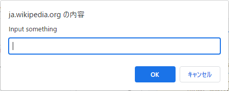

JavaScriptはブラウザに搭載されたスクリプト言語^スクリプト言語です。 インターネットの爆発的な普及という時代の荒波に揉まれましたが、生来の素姓の良さが幸いして今だオンリーワンの地位を維持する言語です。
今回はChormeのデベロッパーツールを利用します。
F12キーでデベロッパーツールを開いてください
コンソールは対話的なJavaScript実行環境です。 ここでJavaScriptを試してみましょう。
alert("Helo, JavaScript");

なんと1行でブラウザのGUIプログラミングが書けました。
alert(`Input was: ${prompt("Input something")}`);
